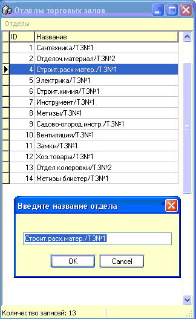

Справочник отделов часто
используется как признак объединяющий товарные группы по их соместному
расположению в торговых залах предприятия.
Позволяет в некоторых случаях
удобнее проводить переучет, чем просто по товарной группе, формировать
некоторые отчеты, а также присваивать отделы кассовым местам (подробнее
см.раздел справки "Кассовые места").